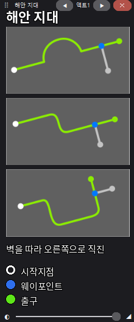
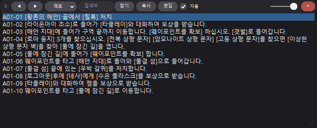

게임 화면 위에서 바로
창을 따로 띄워 확인하는 게 아니라, 보고 있던 자리에 필요한 것만 얹습니다. 전부 위치·크기·투명도를 직접 정할 수 있고, 클릭은 그대로 게임에 전달됩니다.

오버레이
물약 쿨다운 막대
물약을 쓰면 남은 시간이 줄어드는 막대가 뜹니다. 숫자를 읽지 않고 곁눈질로 파악하도록 만들었습니다.
- 슬롯마다 쿨다운을 따로 지정
- 막대 색상·투명도·위치·크기 조절
- 은신처에서는 자동으로 숨김 — 채팅으로
12345를 칠 때 뜨지 않도록

오버레이
스킬 쿨다운 막대
Q·W·E·R·T 스킬도 같은 방식으로. 물약과는 별개의 막대라서 HUD의 다른 자리에 따로 놓을 수 있습니다.
- 물약과 독립된 위치·색상 설정
- 긴 쿨다운 스킬(소환수, 이동기)에 특히 유용

오버레이
맵 레이아웃
지금 들어온 지역의 지형 그림이 자동으로 뜹니다. 지역 이름은 게임 로그에서 읽으므로 이동하면 그림도 알아서 바뀝니다.
- 액트 1~10, 100개 지역 수록
- 마우스를 올렸을 때만 조절 UI가 나타나고, 치우면 그림만 남음
- 모서리를 끌어 크기 조절, 아무 곳이나 끌어 이동

오버레이
레벨업 루트
액트 1~10 루트를 화면 한쪽에 띄워두고 따라갑니다. 지역을 옮기면 해당 단계로 알아서 넘어갑니다.
- 마지막으로 보던 줄을 기억 — 다시 열면 이어서
- 액트 선택·검색·복사, 내용 직접 편집
- 게임 위에 오래 떠 있는 창이라 어두운 테마